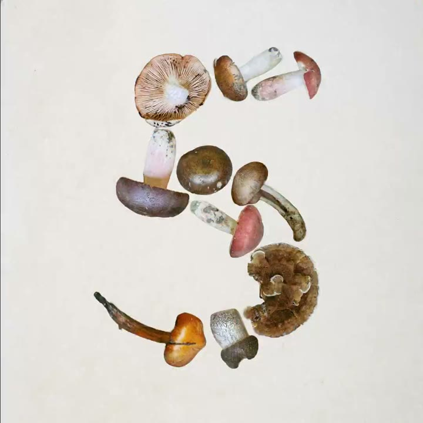
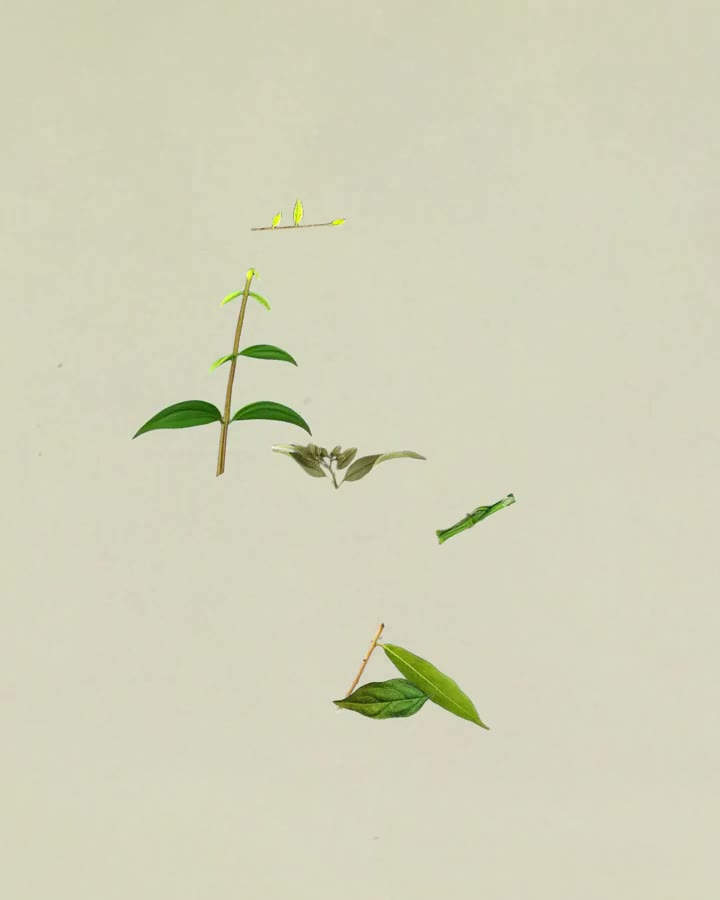

Specimen assembly
Real things, scanned flat and packed edge to edge into one big figure. Each shot is a different collection on its own ground; the cuts accelerate, stop dead, and the name lands.





The rules
10–30 real specimens (scans or top-down photos), flat light, no shadows, touching or overlapping into one figure 70–75% of the frame height.
One collection and one ground colour per shot (kraft, sage, navy, yellow), with grain and paper texture.
Stop-motion on twos; pieces land with a slight rotation.
Cuts accelerate from 1 s to 0.125 s over ~12 s, then a 0.75 s hold in silence.
The name in large type (8–13% of height) on the same ground, held 3 s.
Empty ground only around the figure, never between the pieces. The sparse state lasts under 1 s.
For Kallo
Build the number from the meal. The rice, chicken and greens of “rice with a grilled chicken thigh, skin removed” pack into “548”; then a ramen bowl’s parts into its total; then a burrito’s. A different kitchen per shot, cutting faster, stopping on one, which resolves into the app card.
Turns “numbers from real food” into a single image, and photoreal top-down food is something we can make.
Needs 15–30 consistent top-down cut-outs per figure. It is Claude’s model-teaser grammar, so the figure must be ours (the number, the ring), and never a lone item on empty ground.
Films
Claude · Claude Fable 5 · 58M views
Claude · Claude Opus 5 · 24M views
Claude · Claude Sonnet 5 · 12M views